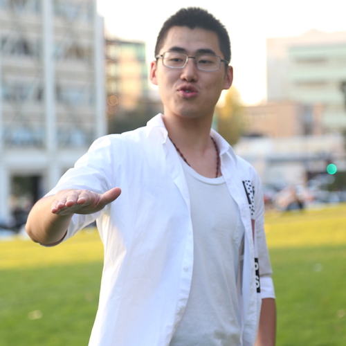

Overview
01
Productions
02
About Us
03
Events
04
Contact Us
05
— About Us —
Who
are we?
Production
Board
李泽霖James
年级：
Junior
专业：
Applied Math and Statistics | Theater Minor
Hello大家好~我是James，是TINY这一年的社长。平常没有什么过多的兴趣爱好，喜欢玩社团，演演戏。我加入TINY有接近两年了，在这里收获到很多小伙伴，一起努力创造过好看的戏剧，一起笑过，一起哭过。TINY是一个温暖的家庭，欢迎你来加入~

周逸之
年级：
大二
专业：
土木工程
我是一个来自宁波的“湖南人”，在新加坡读了高中，现在在伯克利攻读土木工程。作为一个大二的学生，我却被大家叫做“二叔”，因为我老。。但这并不重要，重要的是我风流倜傥，才华横溢，不论是做马桶，做手枪，还是做各种各种道具，都不在话下，于是乎我便担任Logistics的部长。希望大家对我和我部门的工作多多指教！嘿嘿
杜雨馨
年级：
Senior
专业：
Molecular and Cellular Biology
大家好，我是TInY2017 Fall的宣传部部长。过去的几年里在TInY演过戏打过杂，人老了最后发挥一些光和热。希望现在在TInY的家人们可以过得红红火火，老朋友们有着自己的事业和生活，未来还有更多的伙伴们加入我们！笔芯！
封越
年级：
大二
专业：
土木
数学不强物理不会essay写不出来于是读了工程。 从初二开始就不读书更不求甚解。如果现在要是开始读书的话，大概应该充满反思地把霍光传读个几遍。 戏剧的话更加是门外汉，编剧的水平靠删改凑合，演技靠撅嘴吊着，台词靠现编顺着。 所以基本现状就是不学无术不务正业的在读工程师，请大家多多指教，谢谢。
康笑妍
年级：
大二
专业：
CS
哈迷，死忠哈迷，努力的哈迷。 以及我爱戏剧胜过爱学习和奶茶。
Sharon杨嘉铭
年级：
大二
专业：
经济，政治，辅修法语文学
hello我叫杨嘉铭sharon,这学期担任公关部部长，希望和大家相处愉快
刘天阳
年级：
3
专业：
Math Econ
大家好～我叫刘天阳，可以叫我Anastasia，来自深圳，今年大三，major Math和Econ，minor Theater。因为喜欢戏剧，在大二的时候加入了T.I.n.Y，也是在那一学期第一次演音乐剧，现在在T.I.n.Y担任treasurer，主要管理社团经费以及向学校申请fund。虽然只有短短不到两年，但是T.I.n.Y让我认识了很多同样热爱戏剧小伙伴～希望更多的人能够感受戏剧的魅力，我们在T.I.n.Y，怀着对戏剧的初心，等你～
Production
胡雪薇
年级：
大三
专业：
Theater and Performance Studies
一个吃到好吃的东西就会一不小心变可爱的人类
唐思成
年级：
大一
专业：
Cs math
努力
尚叶青
年级：
大四交换
专业：
风景园林
来自河北保定。就读于重庆大学2014级风景园林专业。好读书，爱电影，最爱狗狗。喜欢在城市里行走和摄影。
张宁
年级：
大二
专业：
CS
大家好我是大头，头围53.5。虽然我的头并没有很大，但是我依然有一个粉丝团，叫大头粉丝团。作为一个偶像，你们知道我有多努力吗？我比唐思成还要努力。欢迎大家加入我的粉丝团。让我们一起努力吧！
李昌炫
年级：
大四
专业：
Econ/ stats
我是李昌炫 今年大四 专业是econ/ stats
黄宁远
年级：
大四
专业：
CS
大家好，我叫黄宁远，大四的。
徐姝舫
年级：
大一
专业：
未定
嗜睡，热爱日剧日影和window shopping，还是一个真正的粉丝。自我介绍没什么好写的因为真的只是一个新人小白。。。
程仁俊
年级：
3rd
专业：
Econ CS
沉迷游戏动漫的死废宅XD，喜欢摄影与视频剪辑的
Hypnos Wu
年级：
Junior
专业：
Media Studies
我叫Hypnos,广州人。本人喜爱唱歌，小说，memes,游戏。喜剧与学习使我快乐。加入Tiny是因为就想演，周星驰是我偶像，然而第一次上台竟然是演个很严肃的角色，我明明是想爆笑的。Tiny是个很欢乐的club,若想演，加Tiny。祝各位幸福及长命百岁。
Eden
年级：
Junior
专业：
Econ & Stats
我跟tiny的结缘是在大一的春晚。那时起我就认定了我一定会一直做一个tiny人。tiny是一个温暖而又活泼的社团，大家因为兴趣爱好而相聚在了一起。我很幸运遇见了tiny，也很期待tiny能够越来越好！
陶佳悦 Emma
年级：
大一
专业：
CS
我是陶佳悦，身高七尺有余（？），来自北京。 英文名Emma来自于简奥斯丁的同名小说，因为觉得书里主人公Emma和我自己有很多相似之处。 喜欢吃，对待食物很认真，执着于荷包蛋的蛋黄什么时候戳破的哲学思考。 喜欢三体，伦勃朗，日和漫画，和泡泡堂。 是周杰伦的迷妹，恨不得穿越回十年前去他的演唱会给他疯狂打call！ 嗯，想要了解我，知道这一点就够了！
龙翊君
年级：
Junior
专业：
Statistics
大家好，我叫龙翊君，今年大三。我在伯克利的第一个学期就加入了Tiny，因为对表演很感兴趣。在Tiny我认识了很多有趣而且对戏剧表演很有热情的朋友们，也有幸参演了我人生中第一部话剧，真的算是在伯克利非常宝贵的经历。在这里我希望Tiny越来越好，吸引更多热爱表演热爱戏剧的小伙伴们在。一定会一直关注支持Tiny哒～
Marketing
詹舒雅
年级：
大三
专业：
统计
大家好，我叫詹舒雅。我喜欢发呆。
Essie
年级：
大三
专业：
econ
大家好我是Essie，虽然专业是经济但是最喜欢摄影喜欢拍妹子。希望认识更多有共同爱好的朋友~
杨涧秋
年级：
大二
专业：
哲学
男，来自北京，专业哲学，辅修佛学，喜欢旅游，读书，喝酒，深夜探索哲♂学。 最喜欢的哲学家是马克思，毕生的愿望就是为社会主义事业而奋斗。 在tiny一年多了，tiny是一个我在紧张的学习生活之余可以放松的地方。
Maggie应瑞宁
年级：
Freshman
专业：
Undecided
在Berkeley最喜欢的就是T.I.n.Y.了
赵婧扬Grace
年级：
大一
专业：
Econ/Data Science
我是赵婧扬Grace～是大一新生～重度拖延症患者～资深Foodie～比较热爱生活～喜欢逗别人开心，喜欢讲笑话～是个小学渣，但是做着好好学习天天向上的梦～
盛开
年级：
Senior
专业：
Public health
我大概是在TInY待得最久的老学姐了……当过两届board member，现在深藏功与名了哈哈。虽然学的是Public Health，但对文艺类活动，比如唱歌、跳舞、演戏等等有很浓厚的兴趣，感谢TInY给予了我许许多多在舞台上发光发热的机会~ 一直看着TInY从创立到慢慢长大，希望会越来越好！
周恺琳
年级：
Junior
专业：
Econ
大家好，我是周恺琳。骨骼清奇，天赋异禀，虽然从实际来看这可能只是个美好的愿望。来自江浙沪包邮地区的上海，从大一加入Tiny至今的老人一枚。具有探险精神，热爱尝试新鲜事物。戏剧对我来说充满了无限可能，可以借此来感受不一样的人生。
Tina
年级：
Sophomore
专业：
Political Science and Social Welfare
大家好呀，我是来自西北大荒原的Tina。平时最大的爱好是搞政治和搞艺术。未来想成为一个辩护律师，副业要当个牛肉面馆大厨，每天吃好多好多兰州牛肉面。
胡悦萩
年级：
大二
专业：
History of Art, French
Hello 我是Crystal,来自上海。我今年大二，正在读艺术史和法语双专业。我在TINY的marketing部门负责撰写文案来推广大戏和提高TINY的认知度。我在TINY遇到了许多有才，有情怀，对戏剧有热情的人，所以我相信TINY会越做越好，每一部大戏都会越来越精彩！
小悲
年级：
大三
专业：
Applied Math
大家好我是小悲，平时喜欢一个人在家看看喜欢的up主打游戏，刷刷微博，不爱晒太阳，喜欢网购。喜欢看大家演戏所以加入了Tiny。，从《驴得水》开始就在关注Tiny这个社团，一直到大三才加入了Tiny宣传部因为为了自己喜欢的东西做推送排版是一件很有趣的事。
Alexa 李旖清
年级：
Junior
专业：
Philosophy
大家好！我是刚刚从UCSD转来Berkeley的大三transfer. 作为一个周周写essay的文科僧，我现在书不离手，闲下来了喜欢上Youtube看看电影微剧场或谷阿莫的影评，听听音乐，或者出去Hiking和搜寻各种好吃的。因为太喜欢《风声》这个故事所以在学期初加入了T.I.n.Y, 作为marketing committee的新成员，我在Tiny写了人生中第一篇推送，做了人生中的第一次采访，不亦乐乎。😁
Logistics
任加隆
年级：
Master
专业：
Mechanical Engineering
来自浙江。刚加Tiny一学期。骨灰级影迷，也喜欢打篮球/看足球/桌游/扑克/爬山。偶像是LeBron James, Michael Jackson和庄子。经常有人说我看起来很凶，但我其实很温柔，么么哒。
Sunny向扬
年级：
freshman
专业：
history+theater
Hello大家好啊! 我叫Sunny, 中文名叫向扬, 是个土生土长的深圳人, 是TInY最酷的logistics的一员. 平常喜欢吉他、编曲、吃饭、做饭、浪费时间和睡觉. 从小就特别喜欢表演和戏剧, 在高中也做过关于theater的每个方面, 从acting到costume到props到stage manager. 我的梦想是成为一个很好笑的人.
陈岑
年级：
大三
专业：
历史
我是陈岑，来自江西南昌。本校是华中师范大学，专业方向是日本史，现在在UCB交换中。加入Tiny是因为期待给自己的个性带来一点改变，同时也想交到更多的朋友。兴趣广泛爱好丰富，致力于成为一个有趣且眼界开阔的人。很珍惜在这边的时光，以后也一定会想大家。
涂欣人
年级：
Junior
专业：
汉语言文学
大家好，我是涂欣人，从复旦来Berkeley交换一学期，所以很快就要滚旦了。专业是汉语言文学，爱好打排球，特长也许是劈叉救球？加入Tiny主要也是自己喜欢看戏（演就算了，演技尴尬），然后平时也会写点故事和剧本自娱自乐，毕竟戏剧文学是一家，大二的时候也修了一些戏剧的课程，想要在这条路上走得更远。
雷骏宇
年级：
大四
专业：
土木工程
我是一名土木大四的学生.来自广东(不是福建人), 普通话说得特别烂. 兴趣是请朋友到我家吃我做的饭.
Viki 栗安琪
年级：
senior
专业：
media studies/ minor theater
喜欢做theater幕后 但及其不擅长道具因为手不巧记性也不好； 喜欢lighting design， 在向舞监方面努力。
Rick 陈哲立
年级：
senior
专业：
Stastisic
有一颗站在台前的心却阴差阳错做了幕后。 爱唱歌，爱美食，爱打游戏爱睡觉。
李一杨
年级：
大四
专业：
景观设计
我是李一杨，来自江苏南京，目前是重庆大学景观设计专业的大四学生，这学期在伯克利交换。这几个月在tiny遇见了太多可爱的人，能认识你们是我一生的幸事。衷心希望tiny一直保有现在的温暖与纯粹，有缘再会。
Amber Chen
年级：
Junior
专业：
Econ+Stats
喜欢听音乐，最近比较喜欢华晨宇；觉得健身很棒，但比较难坚持；沉迷网购；喜欢打麻将，玩rage cage；很喜欢旅游，打算有机会去欧洲交换。有空约饭～
吴子奇 / Finn
年级：
最后一年
专业：
认知科学
子奇是在湾区出生长大的，自从小学以来都对戏剧感兴趣，也学了八年的中文。他觉得大家在日常生活中应该多点发挥即兴，因为这样我们的所作所为会才会变得比较认真。子奇超喜欢吃麻辣的东西，麻烦你跟他说你的四川火锅怎么做得那么好呢？除此以外，子奇的空闲时间是在爵士音乐上花的。你如果想要的话，他愿意给你听一下他最近才发现的音乐。
Outreach
周皓岚 Martin
年级：
大三
专业：
环境科学 （ES）
我是一个 阳光 开朗 风趣 不是很爱学习 爱运动 只会唱《征服》 的男生
何琬清
年级：
sophmore
专业：
Linguistics
我叫Psyche，现在大二，放弃Chemistry开始学起了Linguistics。喜欢学语言，喜欢吃东西
郭雪颖shirley
年级：
freshman
专业：
undeclared
大家好，我是shirley,来自山东济南，今年念大一。喜欢戏剧，因为感到能带入进不同的人生。
熊钦雯
年级：
Junior
专业：
Computer Science & Economics
大一加入TINY，如今是最活跃的不活跃成员之一。原来是个正经青年，加入TINY后逐渐成长为戏精本精。喜欢戏剧，喜欢TINY，更喜欢在TINY认识的大家❤️
Jade
年级：
大三
专业：
Econ & Stats
哈喽喽喽，我是王嘉琪，aka Jade！！！ 非学霸，非考霸，勉强算是个懒癌晚期患者。平时没事就在家遛遛狗，或者去gym撸撸铁。早睡早起，退休老干部生活。 绝对的foodie，热爱且尊重一切美食。唉，也就难得会在如何制作美食这一问题上，能展现出一丢丢刨根问底的学术精神了😂lmao。
付梦瑶Fiona
年级：
大四
专业：
media
我是一个长得像学妹的学姐，认识的和不认识的小伙伴问的最多的问题就是：同学，你大几？关于这点我是开心和苦恼并存。我觉得我的性格动如脱兔静如处子，但是朋友表示把后半句拿掉才是我。好吧，跟我不熟的人还是会认为我比较安静的。嗯……还要介绍什么呢？要不下次见面我再详细介绍吧！